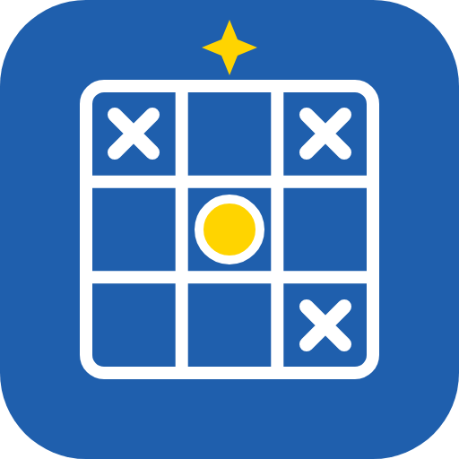

<!doctype html><html><head><meta charset="utf-8"><title>Video card</title><style>
@font-face{font-family:A;src:url(../web/fonts/atkinson-400.woff2)}@font-face{font-family:A;font-weight:700;src:url(../web/fonts/atkinson-700.woff2)}
@font-face{font-family:Cinzel;font-weight:700;src:url(../web/fonts/cinzel-700.woff2)}
html,body{margin:0;width:1440px;height:810px;overflow:hidden}
body{font-family:A,sans-serif;color:#fff;box-sizing:border-box;padding-bottom:150px;background:radial-gradient(900px 500px at 80% 10%,rgba(118,86,224,.55),transparent 70%),radial-gradient(700px 420px at 10% 90%,rgba(80,200,220,.25),transparent 70%),linear-gradient(160deg,#121733 0%,#22195a 100%);display:grid;place-items:center;position:relative}
.grid{position:absolute;inset:0;background-image:linear-gradient(rgba(255,255,255,.05) 1px,transparent 1px),linear-gradient(90deg,rgba(255,255,255,.05) 1px,transparent 1px);background-size:48px 48px}
.box{position:relative;text-align:center;max-width:1180px}
img{width:150px;height:150px;border-radius:30px;box-shadow:0 14px 50px rgba(0,0,0,.45)}
h1{font-family:Cinzel,serif;font-size:80px;line-height:1.08;margin:26px 0 14px}
p{font-size:34px;margin:0;color:#e3e6f6}
.kicker{font-size:26px;letter-spacing:5px;text-transform:uppercase;color:#F5C451;font-weight:700;margin-bottom:4px}
.steps{display:flex;gap:24px;justify-content:center;margin-top:30px}
.steps div{background:rgba(255,255,255,.08);border:2px solid rgba(255,255,255,.3);border-radius:16px;padding:14px 22px;font-size:28px;font-weight:700}
.steps b{color:#F5C451;margin-right:8px}
</style></head><body><div class="grid"></div><div class="box" id="c"></div>
<script>
const C={
 title:`<h1>The Fantastical Logic Grid</h1><p>Every case is a brand new story. You are the detective.</p>`,
 howto:`<div class="kicker">Part 1</div><h1>How to play</h1><p>Set up a puzzle, read the story, then solve the grid.</p>`,
 online:`<div class="kicker">Part 2</div><h1>Play with others</h1><p>Accounts, screen names, races and the scoreboard.</p>`,
 more:`<div class="kicker">Part 3</div><h1>Make it yours</h1><p>Ratings, a game that learns, and the Story workshop.</p>`,
 outro:`<h1>Solve the case</h1><div class="steps"><div><b>1</b>Read the story</div><div><b>2</b>Follow the clues</div><div><b>3</b>Mark X and O</div></div>`,
};
document.getElementById('c').innerHTML=C[location.hash.slice(1)];
</script></body></html>
